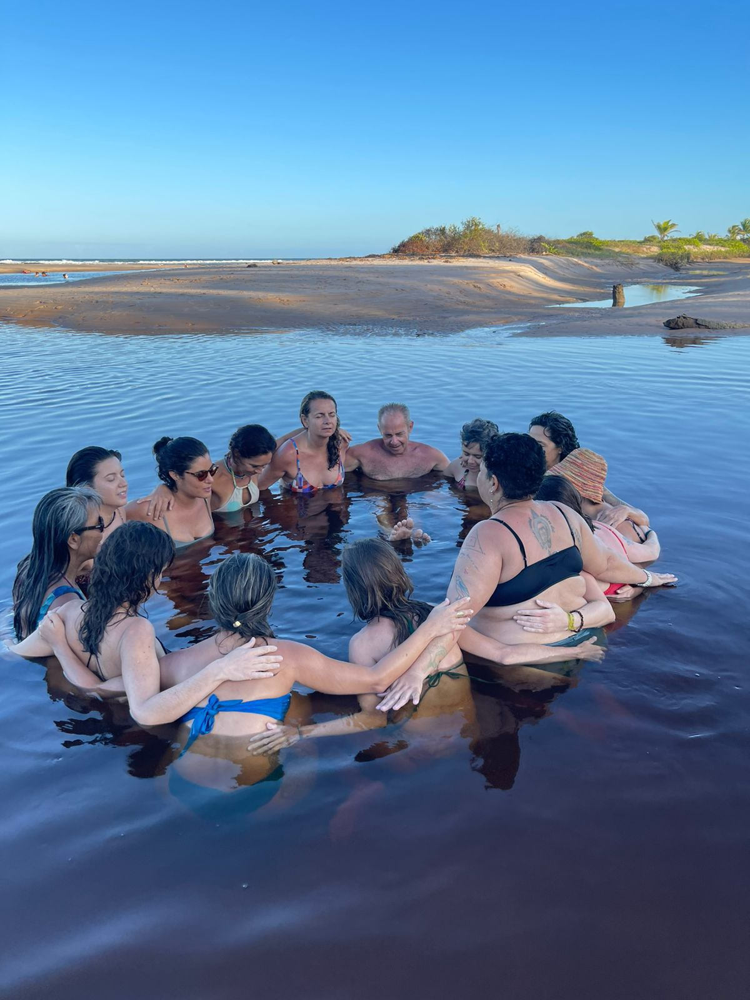
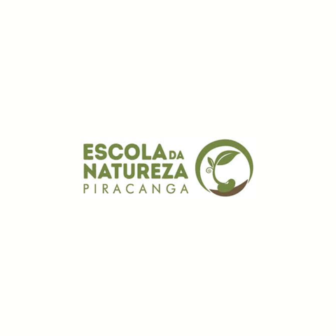
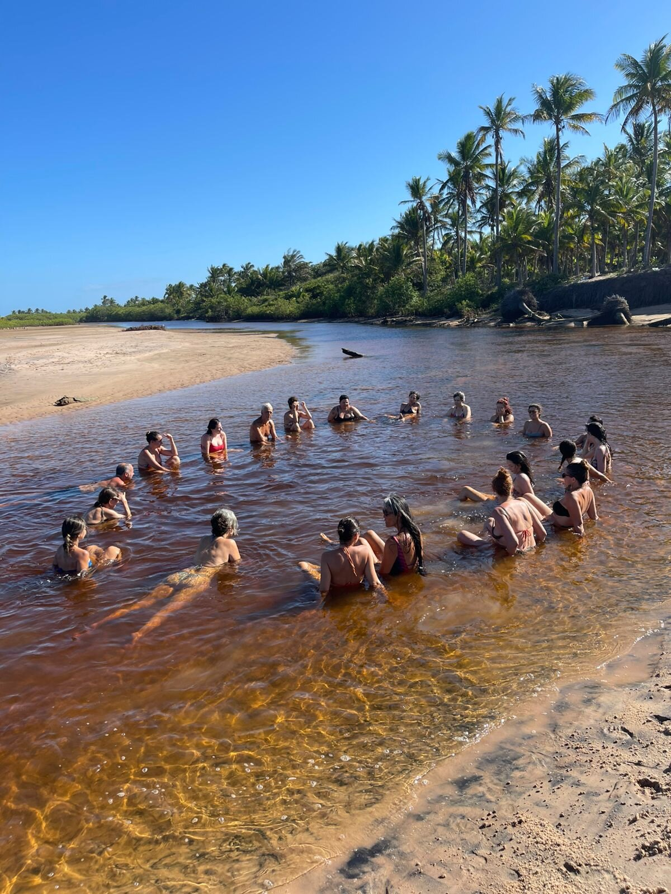

Comunidade local
Moradores, guardiões e iniciativas da Bacia de Piracanga e região. Este encontro é, antes de tudo, um espelho: a comunidade vendo o próprio cuidado, tornado visível.
Um encontro sobre o cuidado: vivido, praticado e aprendido. Como uma comunidade real cuida de suas águas, seus resíduos, suas relações, sua floresta e de si mesma, todos os dias.
A tese que reúne este encontro é simples: muitas das crises ecológicas, sociais e institucionais compartilham uma raiz comum, a diminuição da nossa capacidade de cuidar.
Mas cuidado, aqui, não é sentimento nem aspiração moral. É um conjunto de processos observáveis, praticáveis e aprendíveis. E, se cuidado se aprende, comunidades inteiras podem construir as condições para aprender a cuidar cada vez melhor. É exatamente isso que está acontecendo na Bacia de Piracanga.

O encontro não apresenta uma teoria abstrata. Ele é construído em torno das iniciativas que já acontecem no território, apresentadas por quem as faz, todos os dias.
Proteção de nascentes, monitoramento da qualidade da água e gestão comunitária do sistema que abastece o território.
Processos coletivos de manejo, compostagem e regeneração, transformando resíduo em responsabilidade compartilhada.
Construindo confiança: círculos de governança, resolução de conflitos e mutirões que fazem o território cooperar e aprender junto.
Reflorestamento e restauração ecológica em curso: humanos como guardiões, ecossistemas como mestres.
Piracanga é o campo de observação do white paper Learning How to Care (Biomas Brasil): a proposta de que territórios inteiros podem se tornar Universidades Vivas: lugares desenhados para o desenvolvimento humano contínuo, onde moradores, visitantes e instituições aprendem e ensinam fazendo.
Águas, resíduos, relações e floresta são tratados como processos produtores de cuidado, que podem ser observados, melhorados e transmitidos.
O Painel de Inteligência Territorial, construído pelo Instituto Biomas Brasil por e para os guardiões locais, permite que a comunidade aprenda com a própria prática.
Cada território que aprende a cuidar vira sala de aula para o próximo. A ambição é uma rede de Universidades Vivas, e ela começa aqui.
Cuidado, aqui, anda junto com dados. O Instituto Biomas Brasil constrói em Piracanga a camada de inteligência e coordenação que permite ao território observar a si mesmo: o Painel de Inteligência Territorial de Piracanga, que reúne censo comunitário, mapas, rede de agentes locais e diagnóstico, é público e está operacional. É a base sobre a qual a comunidade aprende, prioriza e age.
Programação preliminar, sujeita a ajustes.
A tese do encontro: a crise de cuidado como raiz comum das crises do nosso tempo, e o cuidado como resposta que Piracanga pratica.
Águas, resíduos, relações e reflorestamento, apresentados por quem cuida: os processos, os resultados e o que ainda está sendo aprendido.
Percurso guiado pelas iniciativas: nascentes, sistemas de resíduos e áreas de restauração.
Comunidade, parceiros e convidados em diálogo sobre os próximos passos da Universidade Viva.
Moradores, guardiões e iniciativas da Bacia de Piracanga e região. Este encontro é, antes de tudo, um espelho: a comunidade vendo o próprio cuidado, tornado visível.
Instituições, investidores sociais e poder público interessados em modelos regenerativos de base territorial: uma oportunidade de conhecer, em campo, um protótipo em construção.
Organizações, instituições e redes que atuam pelo território e pelo clima no Sul da Bahia.

Unah Piracanga

A.mor Piracanga

Escola da Natureza

Casas Piracanga

Instituto Inkiri

Vila dos Anjos
O encontro é aberto e gratuito. Preencha para recebermos você com cuidado.
